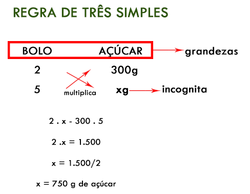
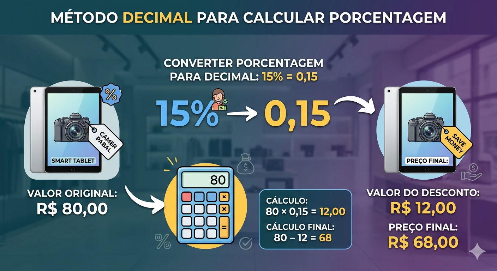
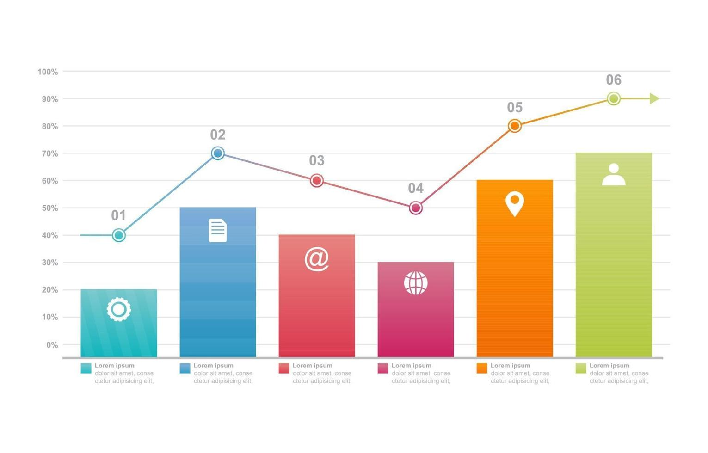
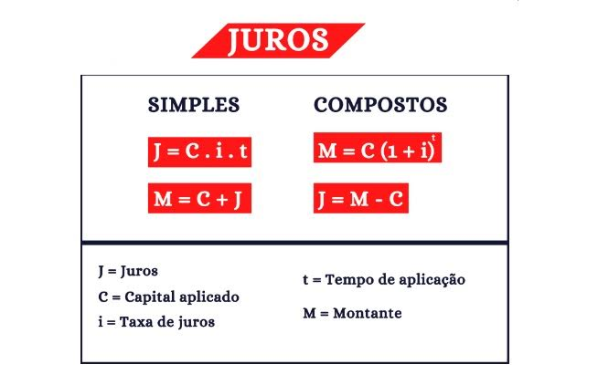

Porcentagem: Regra de Três e Fator Decimal
A porcentagem é uma ferramenta essencial da matemática aplicada, usada para representar partes de um todo de forma padronizada em base 100.
Cálculo por Regra de Três
A regra de três é o método mais seguro para iniciantes. Basta alinhar os valores e as porcentagens correspondentes para encontrar a incógnita.

Esquema visual da montagem de uma regra de três simples.
Cálculo por Fator Decimal
O método decimal é mais direto: transforma-se a porcentagem em um número decimal (ex: 15% vira 0,15) e multiplica-se pelo valor desejado.

Exemplo de conversão e multiplicação direta.
Dominar essas duas formas de cálculo garante agilidade na resolução de problemas cotidianos e acadêmicos.
↑ Voltar ao topoAplicações Práticas

